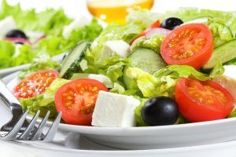
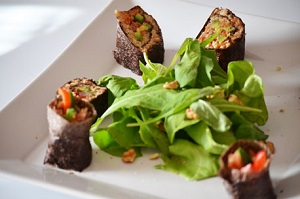
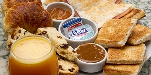
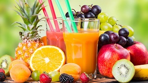
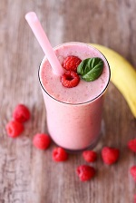
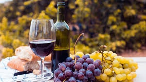
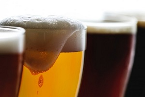

Entradas

Muzzarella Sticks
Bastones de muzzarella rebozados
Jalapeños rellenos
Jalapeños rellenos de langostinos y queso Cheddar con panceta.
Ración de Rabas
220 gr. de chicharrón de calamar frito con alioli
Ración de papas fritas con Cheddar y verdeo
Chicken Wings
Alitas de pollo empanada y frita con salsa BBQ
Croquetas de hongos
Croquetas elaboradas a base de hongos disecados.
Langostinos en cous cous
Langostinos a la plancha con frutos secos, tomates cherry, albahaca y cous cous
Chiripones a la plancha
Conchutney de mango y sandía a la plancha
Nachos con refrito
Nachos salteados con porotos negros, chorizo colorado y salsa BBQ
Tapa de morcilla
Pan casero de campo, morcilla, verdeo y queso brie.
Tapa de campo
Morcilla, papa, chutney de manzana y crema de eneldo
Tapa de mollejas
Mollejas con mango, ananá, jengibre, chiles y pochoclo.
Volver arribaPlatos Principales

Bife Criollo
Ojo de bife con patines andinos, ensalada de rúcula, provolone y salsa criolla
Ceviche (elaborado en el momento)
Pesca del día del barrio chino con cebolla morada, ajo, rocoto, apio, cilantro, jengibre, maíz cancha, batata y leche de tigre.
Pesca con Chop Suey
Pesca del día a la plancha con olivas, ajo y alcaparras, acompañada de chop suey de vegetales.
Pesca a la plancha
Con risotto verde de espárragos y remolacha asada.
Bife T-Bone
600 gas de carne corte T-Bone con chimichurri, patines andinos y encurtido de remolacha.
Pechuguitas Ahumadas
Pechugas de pollo ahumadas, rellenas con duxelle de hongos y cebolla. Servido con arroz con mostaza y naranjas almendradas
Carré de cerdo
Con Chutney de zanahorias y batatas glaseadas con salsa teriyaki.
Sorrentinos verdes
Rellenos con calabaza asada y queso brie, perfumados con manteca de hierbas y jugo de pomelo.
Volver arriba
Ensaladas
Ensalada Caesar
Con langostinos o con Pollo Clásica Caesar Salad con pollo grillado o langostinos
Penne Rigattes
Con salsa filete, crema o rosa.
Ensalada de langostinos
Langostinos salteados, trabajito, cebolla de verdeo y mango con dressing de naranja, vinagre y aceite de oliva.
Volver arriba
Postres

Flan Casero
Nuestro clásico flan con dulce de leche y crema.
Ensalada de frutas
Fondue de chocolate
Con frutas frescas fileteadas.
Crocante de Banana y Nutella
Degustación de Mousses
Mousse de mango, chocolate, moka y frutos rojos.
Cheesecake
Volver arriba
RAWS
Pizza esenia
Masa de semillas de lino activadas con relleno de queso de cayú, tomates frescos y rúcula.
Rolls
De semillas de lino con relleno de palta, verduras frescas terminado con “fina salsa oriental”.
Tomates rellenos
de verduras de estación y galletas raw.
Sushi vivo
de arroz de coliflor ,palta, verduras de estacion y salsa de soja.
Guacamole
con galletas raw de lino y girasol y dips de zuccini.
Tallarines vivos
de zuccini con salsa natural de tomates o pesto. hojita-menu-raw
Quesitos vivos
de semillas con galletas raw capreses.
Volver arriba
Desayunos y Meriendas
Desayuno Continental
Café, chocolate, té con o sin leche, cruasanes, tostadas con mantequilla y mermelada, pan, quesos, embutidos, yogures, fruta y cereales.
Desayuno Americano
Tostadas con mantequilla, tocino, patatas fritas y huevos fritos y revueltos. tortitas aderezadas con sirope de arce, acompañadas de tocino o bacon. Jugo de naranja y café americano largo.
Desayuno o merienda simple
3 Medialunas de manteca o grasa, y un café con leche o té.
Volver arriba
Bebidas
Jugo de naranja
Jugo de manzana
Limonada
Jugo de zanahoria
Leche de tigre
Coca-cola
Sprite
Fanta
7up
Volver arriba
Smoothies
Smoothie de frutos rojos
Smothie con las mejor selección de frutos rojos, con fresas, arándanos y frambuesas.
Smoothie de durazno
Elaborado con yogur griego y leche de coco, junto con un poco de canela
Smoothie Bowl
Elaborado con leche, yogur griego, con avellanas, cacao y semillas de cáñamo con topping
Smoothie de mango
Elaborado con leche, yogur griego, miel, cubitos de hielo, mango, extracto de vainilla.
Volver arriba
Té y Café
Te de manzanilla
Te cachamay
Te verde
Te rojo
Café express
Café americano
Café cortado
Café lágrima
Capuchino
Volver arriba
Vinos
Bolgheri-Sassicaia Sassicaia 2015
De Bodegas Tenuta San Guido. elaborado con las variedades Cabernet Sauvignon (86%) y Cabernet Franc (15%), fermentado en cubas de acero inoxidable y posteriormente envejecido en barricas de roble francés (un tercio barricas nuevas) durante un periodo de 24 meses.
St. Emilion 2015
De la Bodega Château Canon-La Gaffelière, un vino tinto francés de la región de Burdeos elaborado con un 55% de Merlot, un 38% de Cabernet Franc y un 7% de Cabernet Sauvignon, el vino se ha envejecido en barricas de roble nuevo francés durante 15 meses, lo que le ha conferido pureza y frescura.
Chianti Classico Riserva 2015
De Bodegas Castello di Volpaia, se trata de un vino tinto italiano de la región de la Toscana elaborado con uvas ecológicas de la variedad Sangiovese, procedentes de ocho parcelas diferentes. La vinificación se realiza en tanques de acero y posteriormente el vino se envejece en una mezcla de barriles de roble eslavo (80%) y roble francés (20%) durante un periodo de 24 meses.
Rioja 890 Gran Reserva Selección Especial 2005
De Bodegas Castello di Volpaia, se trata de un vino tinto italiano de la región de la Toscana elaborado con uvas ecológicas de la variedad Sangiovese, procedentes de ocho parcelas diferentes. La vinificación se realiza en tanques de acero y posteriormente el vino se envejece en una mezcla de barriles de roble eslavo (80%) y roble francés (20%) durante un periodo de 24 meses.
Rioja 890 Gran Reserva Selección Especial 2005
De Bodegas La Rioja Alta. Se trata de un vino elaborado con un 95% de uvas de la variedad Tempranillo y un 5% de Mazuelo y Graciano, ha sido envejecido durante seis años en barricas de roble americano que se han fabricado en la propia bodega. Se embotelló en el año 2012 y se lanzó al mercado seis años después, los expertos consideran que se trata de un ejemplo de vino tradicional de La Rioja, elaborado con mucho tiempo y mano de obra.
Brut Champagne Dom Pérignon Legacy Edition 2008
De Bodegas Moët & Chandon. Se trata de un champán elaborado en la región de Champaña con uvas de las variedades Chardonnay, Pinot Noir y Pinot Meunier, en un año de clima excepcional que se consideró el mejor de la década. Su etiqueta Legacy Edition hace honor a la jubilación de Richard Geoffroy, y la entrada de su sucesor Vincent Chaperon. Es un champán con un color amarillo y reflejos dorados, con una nariz elegante donde predominan los aromas frutales con notas cítricas y tostadas. En boca es envolvente y cremoso, con sabores a kumquat, crema pastelera, jengibre confitado, brioche tostado.
Chardonnay Carneros Larry Hyde & Sons 2016
De Bodegas Aubert. Se trata de un vino estadounidense producido en California, elaborado con uvas de la variedad Chardonnay y madurado en barricas de roble francés nuevo. Los expertos de la revista enológica destacan que las uvas se han producido en uno de los lugares vitícolas más codiciados, en el distrito de Carneros en el sur del Condado de Napa, donde las particulares condiciones del terreno han permitido elaborar un vino de sabor intenso, el clima se ha encargado de darle frescura y acidez.
Pinot Noir Chehalem Montañas Dopp Creek 2015
De la Bodega Colene Clemens. Es un vino elaborado con uvas de la variedad Pinot Noir, fermentado en tanques de acero inoxidable y envejecido durante 11 meses en barricas de roble francés (28% nuevas). Se destaca que, aunque la cosecha del 2015 fue la más calurosa de Oregón, el enólogo supo canalizar las condiciones climáticas para obtener un vino elegante y complejo.
Volver arribaCervezas
Mira Brune Nº 6
una cerveza Brown Ale de estilo americano con una graduación alcohólica del 6,2%.Resulta ligeramente amarga, percibiéndose el uso de lúpulos con toques cítricos, y en cuanto a sabor tiene reminiscencias a café y cacao, como suele ocurrir en el caso de cervezas elaboradas con maltas torrefactas.
NBeer Lindongjiangzhi Weizenbock
Al ser una weizenbock, es una cerveza bastante más potente y oscura que las típicas hefeweizen alemanas o witbier belgas. Con una graduación alcohólica del 8,1%, es una cerveza de temporada que se elabora para beber durante los meses más fríos. De color cobrizo y más lupulada de lo habitual, se perciben algunas maltas caramelizadas pero sin dejar de lado el típico aroma a plátano, clavo y anisete de las weizen más clásicas.
Votus Nº 001
Es una Red IPA elaborada con lúpulos americanos y una graduación alcohólica del 7,2%. Se trata de una cerveza muy aromática, con notas florales y herbales, y amargor medio alto que se equilibra perfectamente con el ligero dulzor de las maltas empleadas. De color rojo cobrizo, esta IPA marida a la perfección con toda clase de platos condimentados y especiados, además de carnes ahumadas o a la barbacoa.
Zubr Gold
Una cerveza de carácter industrial, una birra de baja fermentación de estilo checo, como no podía ser de otra manera. De aspecto dorado totalmente cristalino, el amargor del lúpulo y el dulzor de la malta están en perfecto equilibrio, aunque el sabor puede parecer algo más fuerte que la habitual cerveza rubia de barra de bar. Con una graduación alcohólica del 4,6%, resulta muy ligera y fácil de beber.
Camba Pale Ale
Una pale ale elaborada con lúpulos americanos (Centennial, Chinook y Simcoe), lo que le da un aroma exótico a mango, pomelo y papaya. Con su 5,3% de alcohol y sus 31 IBUs de amargor, resulta ser una cerveza de color anaranjado, muy refrescante y cítrica, aunque algo seca, que marida de maravilla con ensaladas, carne de ave, marisco e incluso postres afrutados.
Volver arriba